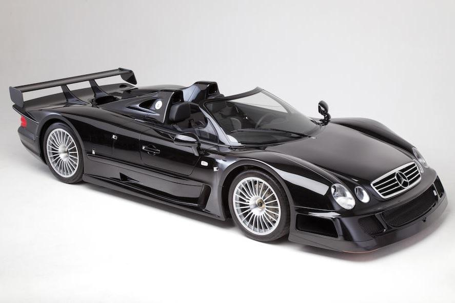
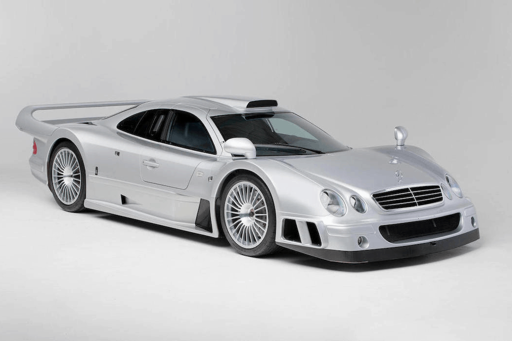
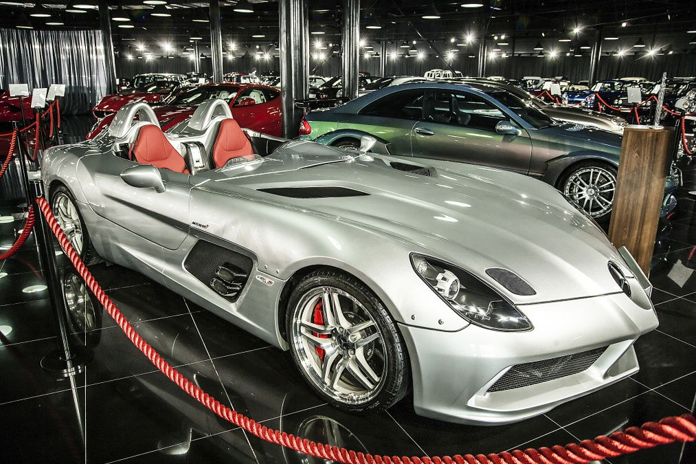

Mercedes-Benz CLK GTR Roadster

The Mercedes-Benz is a thoroughbred racing car built by Mercedes and AMG for homologation requirements imposed by the FIA GT Championship in 1997. A limited edition street version of the Mercedes CLK GTR was in fact necessary in order to be allowed on the track.
Mercedes-Benz CLK GTR Coupe

When the FIA GT Championship was founded in 1997 as the successor to the BPR Global GT Series, Mercedes-Benz competed with the new CLK-GTR racing touring car. The vehicle was developed, built and ultimately used in the championship together with motorsport partner AMG.
Mercedes-Benz SLR Stirling Moss

Named after the British racing driver, the SLR Stirling Moss is a limited edition variant unveiled at the 2009 Detroit Auto Show. The limited edition sports car has a speedster styling that does not include a roof or a windscreen. The car is designed by Yoon Il-hun and is inspired by the 300 SLR race car.